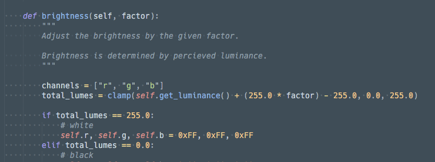
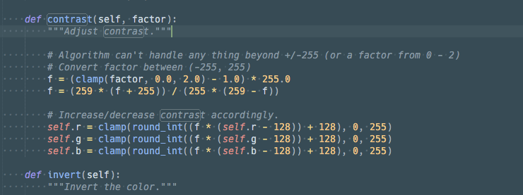
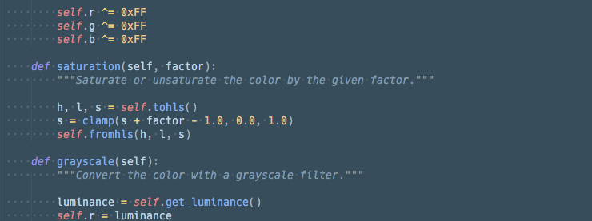
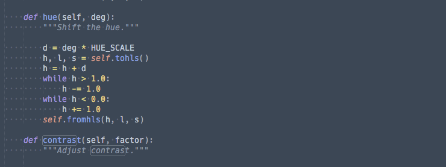
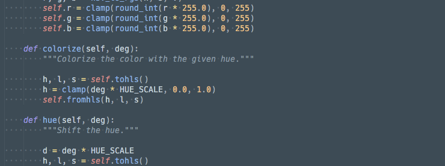
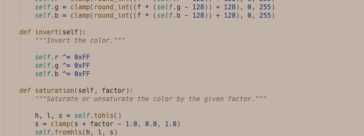
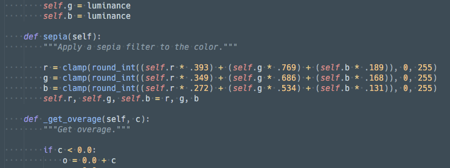
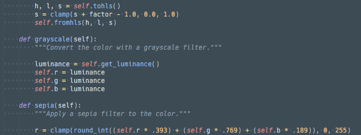
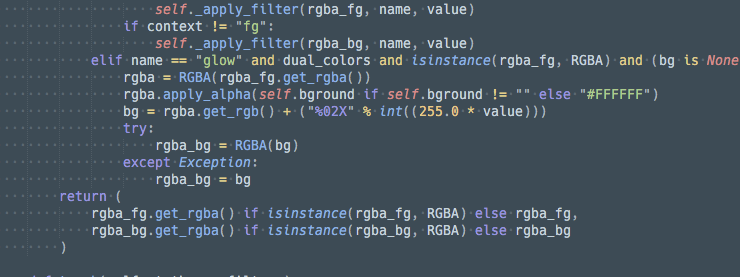

User Guide
Overview
In order to use ThemeTweaker, you must set up your desired commands. Commands can be for the command palette, keymaps, menu etc. ThemeTweaker comes with an example keymap file to show how commands are constructed.
The default steps, hues, or intensities (depending on the command), are defined in the settings file. These can be changed if desired.
When tweaking a scheme, the scheme file (plus overrides in Sublime Text builds 3150+) will be consolidated and copied into User/ThemeTweaker with the scheme name and the prefix tweak_. In Sublime Text 3150+, scheme files will be of the type .sublime-color-scheme, while earlier builds will use the file type of .tmTheme.
Filter Commands
Brightness
theme_tweaker_brightness-
Adjust the brightness of theme.

Parameters Type Description directionstring Accepts a string that is either +or-to control whether to go brighter or darker respectively.stepfloat Controls the brightness magnitude for each step. It is in relation to the center 1.0. So a value of0.01would shift it1.01.contextstring You can limit the filter to the background or foreground by setting the argument to either bgorfgrespectively.themestring Theme to adjust. If none, it will use the current set theme.
Contrast
theme_tweaker_contrast-
Adjust the contrast of theme.

Parameters Type Description directionstring Accepts a string that is either +or-to control whether to go brighter or darker respectively.stepfloat Controls the contrast magnitude for each step. It is in relation to the center 1.0. So a value of0.01would shift it1.01.contextstring You can limit the filter to the background or foreground by setting the argument to either bgorfgrespectively.themestring Theme to adjust. If none, it will use the current set theme.
Saturation
theme_tweaker_saturation-
Adjust the brightness of theme.

Parameters Type Description directionstring Accepts a string that is either +or-to control whether to go brighter or darker respectively.stepfloat Controls the brightness magnitude for each step. It is in relation to the center 1.0. So a value of0.01would shift it1.01.contextstring You can limit the filter to the background or foreground by setting the argument to either bgorfgrespectively.themestring Theme to adjust. If none, it will use the current set theme.
Hue
theme_tweaker_hue-
Shift the hue of colors in the theme.

Parameters Type Description directionstring Accepts a string that is either +or-to control whether to go brighter or darker respectively.stepinteger Accepts an integer which represents a degree between 0and360to shift the hue.contextstring You can limit the filter to the background or foreground by setting the argument to either bgorfgrespectively.themestring Theme to adjust. If none, it will use the current set theme.
Colorize
theme_tweaker_colorize-
Applies the given hue to all colors in the theme.

Parameters Type Description hueinteger Accepts a hue value that will be applied to all colors. contextstring You can limit the filter to the background or foreground by setting the argument to either bgorfgrespectively.themestring Theme to adjust. If none, it will use the current set theme.
Invert
theme_tweaker_invert-
Command will invert all colors of the theme.

Parameters Type Description contextstring You can limit the filter to the background or foreground by setting the argument to either bgorfgrespectively.themestring Theme to adjust. If none, it will use the current set theme.
Sepia
theme_tweaker_sepia-
Applies a sepia filer to the theme colors.

Parameters Type Description contextstring You can limit the filter to the background or foreground by setting the argument to either bgorfgrespectively.themestring Theme to adjust. If none, it will use the current set theme.
Grayscale
theme_tweaker_grayscale- Applies a grayscale filter to the theme colors.

Parameters | Type | Description ---------- | ------ | ----------- `context` | string | You can limit the filter to the background or foreground by setting the argument to either `bg` or `fg` respectively. `theme` | string | Theme to adjust. If none, it will use the current set theme.
Glow
theme_tweaker_glow-
Apply a glow filter to foreground colors.

Parameters Type Description intensityfloat Accepts a floating point glow intensity to determine the strength of the glow. Glow should be between 0.0and1.0.themestring Theme to adjust. If none, it will use the current set theme.
Custom Filter
theme_tweaker_custom-
A command that allows multiple filters to be chained together. It takes a string with special syntax to apply filters. All filters that are available under Filter Commands are configurable. All operations are defined by a single string.
Available Filters:
- grayscale
- sepia
- invert
- brightness(float)
- saturation(float)
- contrast(float)
- hue(signed integer)
- colorize(integer)
- glow(positive float)
To apply a filter to just the foreground or background, simply add
@fgor@bgto the filter in question.Example
{ "keys": ["up"], "command": "theme_tweaker_custom", "context": [ {"key": "theme_tweaker"} ], "args": { "filters": "grayscale@fg;sepia;colorize(0);hue(-30);brightness(1.050000)@bg;saturation(0.900000);brightness(0.950000)" } },
Special Commands
Undo
theme_tweaker_undo- Undo last applied filter.
Redo
theme_tweaker_redo- Re-apply last reverted filter.
Clear
theme_tweaker_clear- Clears all applied filters.
Toggle Theme Tweaker Mode
This command is available in the command palette as Theme Tweaker: Toggle Tweak Mode.
toggle_theme_tweaker_mode- Toggles the internal
theme_tweakermode flag that can be used as a context for when tweak commands are active. See Constructing Commands for more info.
Constructing Commands
Whether a keymap, command palette, or menu command is desired, the two theme tweaker related required arguments are command which is the name of the commands and args which is a dictionary of the parameters.
{ "keys": ["up"], "command": "theme_tweaker_brightness", "args": { "direction": "+" } },
Theme tweaker can check for the theme_tweaker context to control whether a command is active or not. The theme_tweaker context is toggled with the Toggle Theme Tweaker Mode command.
{ "keys": ["up"], "command": "theme_tweaker_brightness", "context": [ {"key": "theme_tweaker"} ], "args": { "direction": "+" } },
Settings
The following settings are used to control default values for the provided commands.
Brightness Step
Controls the default brightness step. Must be a positive value between 0.0 and 1.0.
// Default brightness steps (+/- from 1.0) (range: 0.0 - 1.0) // Can be overridden in the // ThemeTweakerBrightnessCommand command's argument "step" "brightness_step": 0.01,
Contrast Step
Controls the default contrast step. Must be a positive value between 0.0 and 1.0.
// Default contrast steps (+/- from 1.0) (range: 0.0 - 1.0) // Can be overridden in the // ThemeTweakerContrastCommand command's argument "step" "contrast_step": 0.01,
Saturation Step
Controls the default saturation step. Must be a positive value between 0.0 and 1.0.
// Staturation steps (+/- from 1.0) (range: 0.0 - 1.0) // Can be overridden in the // ThemeTweakerSaturationCommand command's argument "step" "saturation_step": 0.01
Hue Step
Default hue step. Must be an integer from 0 to 360.
// Hue step in degrees (range 0-360) // Can be overridden in the // ThemeTweakerHueCommand command's argument "step" "hue_step": 10,
Colorize Hue
The default hue for colorization.
// Default colorize default hue (0=Redish) // Can be overridden in the // ThemeTweakerColorizeCommand command's argument "hue" "colorize_hue": 0,
Glow Intensity
The default for glow intensity. Must be a value from 0.0 to 1.0.
// Default glow intensity (range: 0.0 - 1.0) // Can be overridden in the // ThemeTweakerGlowCommand command's argument "intensity" "glow_intensity": 0.1,